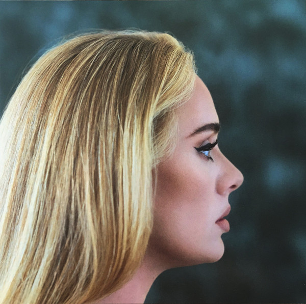

Adele 5. května 1988, Londýn
Adele 5. května 1988, Londýn
Adele 5. května 1988, Londýn
Adele 5. května 1988, Londýn
Citace z Wikipedie:
Laurie Blue Adkins, MBE (* 5. května 1988 Londýn) je britská zpěvačka a skladatelka známá jen jako Adele. V roce 2008 převzala cenu BRIT Awards v kategorii Cena kritiků, která je udílená umělcům, kteří v té době ještě nevydali album.
Debutová deska nazvaná 19 vyšla v lednu 2008 a dostala se na první místo prodejního žebříčku ve Velké Británii. Druhé album s názvem 21 se stalo nejprodávanějším albem tohoto století a prestižní hudební magazín Billboard ho označil za nejlepší album všech dob. Celosvětové vydání proběhlo 19. ledna 2011. Z desky vyšel také singl „Rolling in the Deep“. V roce 2012 přednesla svoji píseň „Skyfall“, za kterou obdržela Zlatý glóbus a Oscara. Alba její diskografie se na prvním místě nejprodávanějších desek udržely nejdéle v historii. Překonala tak Rolling Stones i Madonnu.
Po tříleté odmlce se v roce 2015 vrátila s novým, již třetím studiovým albem 25, které ji ihned dostalo zpět na vrchol hudebního průmyslu. Píseň „Hello“ okamžitě obsadila první místa hudebních žebříčků a na YouTube dosáhla za pouhé 3 měsíce 1 miliardu zhlédnutí. Videoklip ke skladbě také drží rekord v největším počtu zhlédnutí na YouTube v prvních 24 hodinách od zveřejnění – 27,7 milionů. Později přibyl i rekord za nejrychlejší dosažení 1 miliardy zhlédnutí, a to za 87 dní od zveřejnění.
Diskografie:
